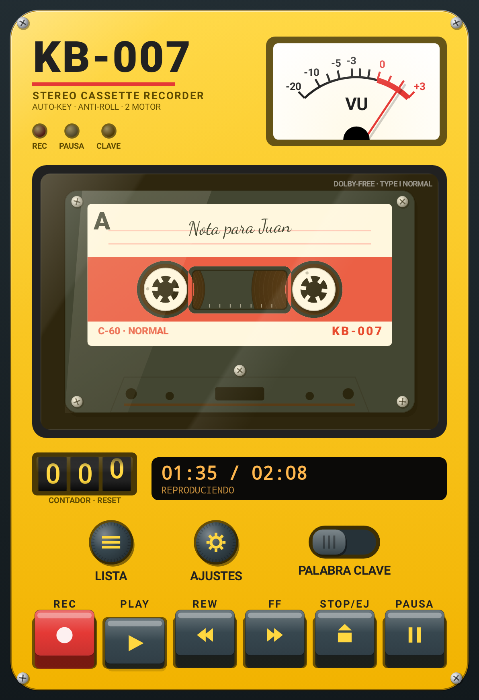
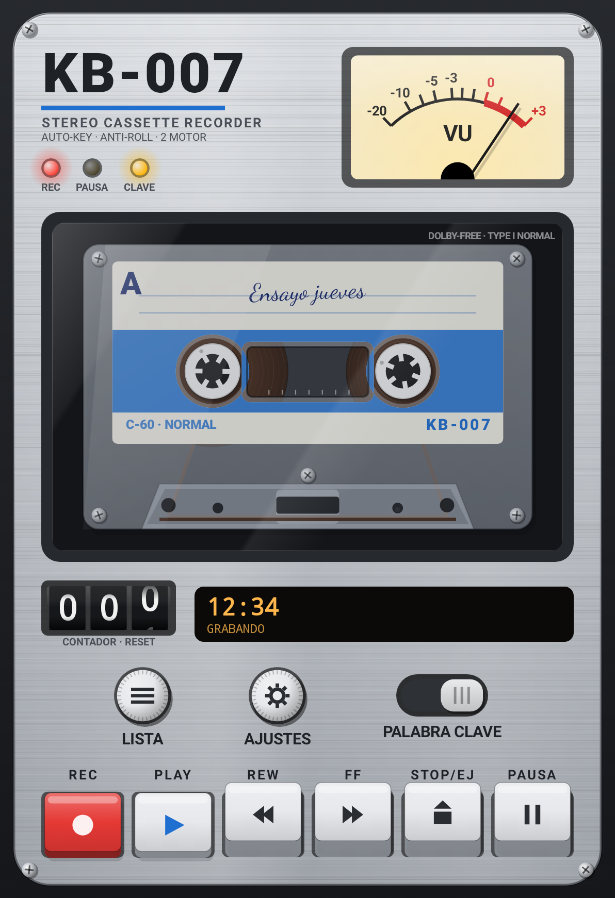
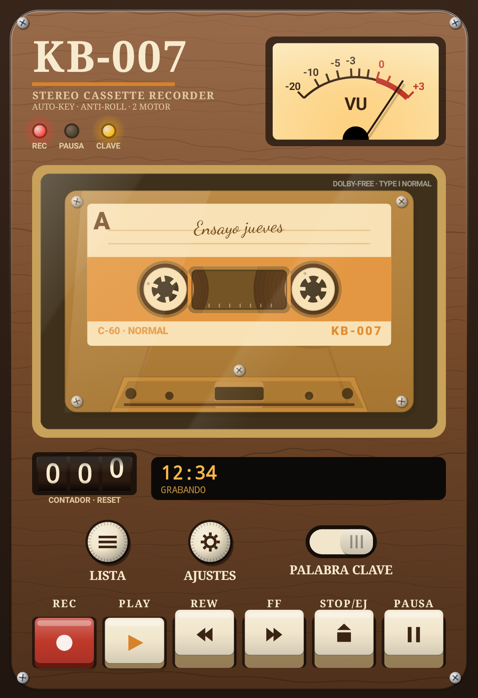
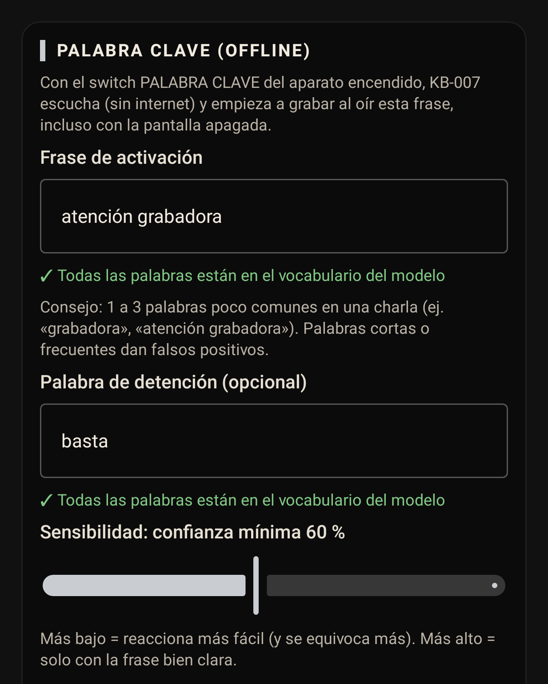
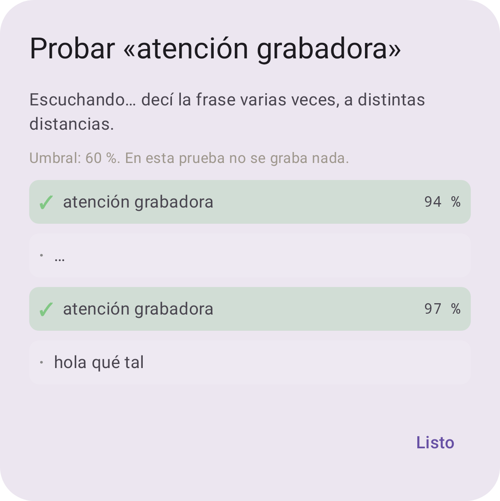
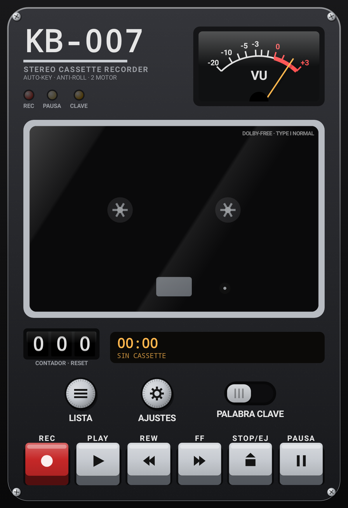
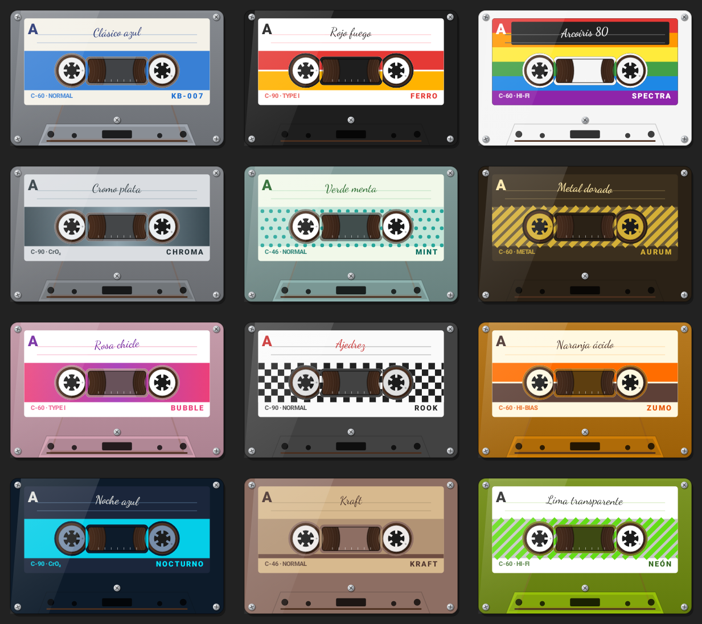
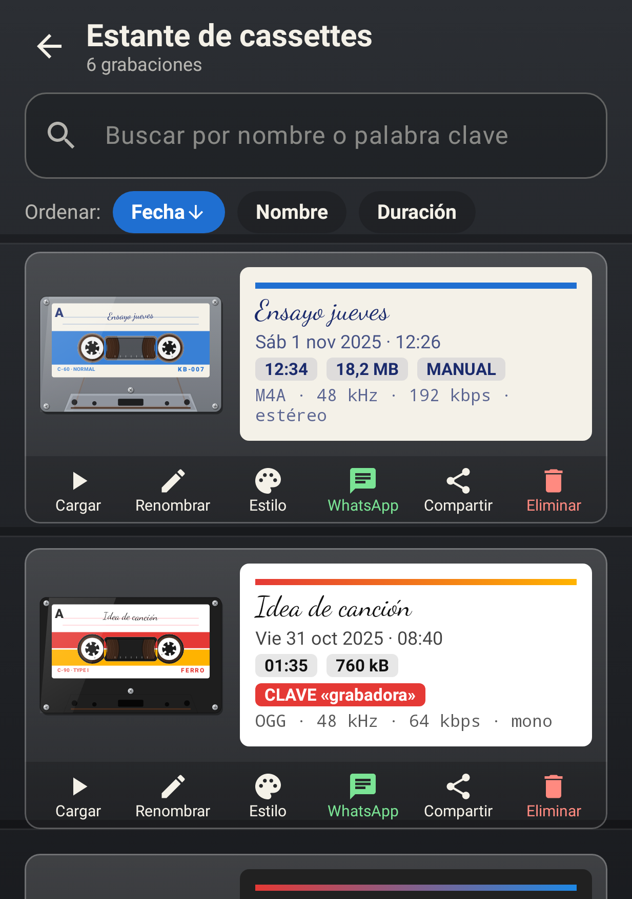

Con la pantalla apagada y el teléfono en el bolsillo, KB-007 queda escuchando. Cuando oye tu palabra secreta, graba al instante, con los segundos anteriores incluidos. El reconocimiento de voz ocurre dentro del teléfono: nada sale a internet.
Una o varias palabras («atención grabadora», «grabadora empezá»). La app verifica al instante que el reconocedor la conozca y te deja probarla en vivo antes de usarla.
Un switch en el aparato. Después podés apagar la pantalla o salir de la app: KB-007 sigue escuchando en segundo plano con un consumo bajo de batería.
Una vibración breve (opcional y silenciosa) confirma que arrancó. La grabación incluye de 2 a 5 segundos previos a la palabra, para no perder el comienzo.
Con una palabra de detención («basta»), tras unos segundos de silencio, por duración máxima o con un toque en la notificación. Cada grabación queda marcada como «por palabra clave».


Manos libres: grabás aunque tengas las manos ocupadas o el teléfono lejos.
Escucha y graba con el equipo bloqueado, como un grabador de bolsillo.
De pre-grabación: el archivo empieza antes de que digas la palabra.
Reconocimiento de voz local. Sin servidores, sin cuentas, sin rastros en la nube.
Cada detalle del aparato está dibujado y animado a 60 cuadros por segundo. Por dentro tiene un motor de grabación profesional diseñado para no perder nunca un audio.
Los carretes giran mientras grabás o escuchás y la cinta pasa de un lado al otro según el avance.
Desde notas de voz livianas hasta audio sin compresión.
Usa el procesamiento del propio teléfono cuando está disponible.
Si el teléfono se apaga o la app se cierra de golpe, al volver a abrirla la grabación se recupera.
Cada grabación es un cassette distinto: 12 estilos que rotan solos o que elegís a mano.
Botón directo a WhatsApp (también Business) o a cualquier app: Gmail, Drive, Telegram…
Metálico 80, Retro deportivo, Negro periodista y Madera 70: cambian los materiales, los colores y las tipografías del aparato.
Sin cuentas, sin anuncios, sin servidores. Los audios quedan en tu teléfono (en la carpeta de la app, en Música o en la que elijas, incluida la tarjeta SD).

Carcasas transparentes o sólidas, etiquetas con franjas, degradés, cuadros, lunares y diagonales, y distintos tipos de cinta. En el estante no se confunde ninguna grabación.

Todo de un vistazo, y cargar, renombrar, cambiar el estilo o compartir en un toque.

| Función | KB-007 Spy Recorder | Grabadora común |
|---|---|---|
| Empieza a grabar por voz, con la pantalla apagada | Sí, con tu palabra secreta | No |
| Guarda lo dicho antes de empezar | Sí, de 2 a 5 s de pre-grabación | No |
| Reconocimiento de voz sin internet | Sí, 100 % en el teléfono | — |
| Recupera el audio si se apaga el teléfono | Sí, automáticamente | Suele perderse |
| Pausa automática en llamadas | Sí (también WhatsApp) | Variable |
| Formatos AAC, Opus y WAV | Los tres, hasta 48 kHz estéreo | Generalmente uno |
| Compartir directo a WhatsApp | Sí, y convierte WAV a M4A | A veces |
| Diseño y experiencia | Walkman animado, 4 temas, sonidos y vibración | Botón rojo y lista |
| Publicidad y cuentas | Sin anuncios, sin registro | Variable |
Entrevistas y declaraciones con el teléfono en el bolsillo. Arranca con una palabra, sin desbloquear.
Ensayos en WAV o AAC de alta calidad, en estéreo y con el micrófono sin procesar.
Clases completas sin cortes. Pausa sola si entra una llamada.
Preset «Reunión» con reducción de ruido. Se comparte por mail o WhatsApp al terminar.
Manejando, cocinando o caminando: «atención grabadora», y la idea queda guardada.
Diario de voz, recordatorios y listas, con un cassette distinto para cada uno.
| Sistema | Android 8.0 (Oreo) o superior · optimizada para Android 14 y 15 |
| Procesador | ARM de 64 y 32 bits (prácticamente todos los teléfonos) |
| Pantallas | Teléfonos y tablets · vertical y horizontal |
| OGG/Opus | Android 10 o superior |
| Marcas | Cualquier marca con Android 8.0+ · incluye guía de batería para Samsung, Xiaomi, Huawei y OnePlus |
| Tamaño | 79 MB (incluye el reconocedor de voz) |
| Idioma | Español |
| Internet | No necesita |
| Formatos | M4A/AAC · OGG/Opus · WAV PCM 16 bits |
| Frecuencias | 16 · 22,05 · 44,1 · 48 kHz |
| Bitrate | 64 · 96 · 128 · 192 · 256 kbps |
| Canales | Mono / estéreo (según el equipo) |
| Fuentes | Estándar · voz · sin procesar · cámara/externo |
| Corte automático | Por silencio o por duración máxima |
| Destino | Carpeta de la app · Música/KB-007 · cualquier carpeta o SD |
| Micrófono | Grabar y escuchar tu palabra clave |
| Notificaciones | Mostrar el estado y los botones mientras graba |
| Segundo plano | Seguir funcionando con la pantalla apagada |
| Batería sin restricciones | Que el sistema no corte la escucha (opcional) |
Antes de cada pedido de permiso, la app explica para qué lo necesita.
En el teléfono, desde el enlace o archivo recibido.
Activá «instalar apps desconocidas» para el navegador o Archivos.
Aceptá el micrófono y las notificaciones, y pulsá REC.